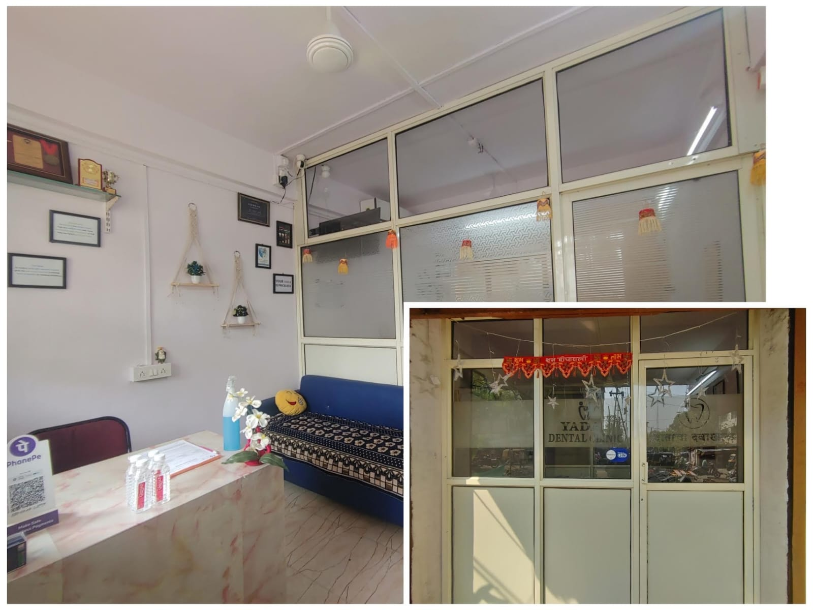
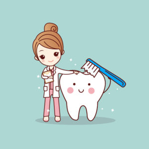
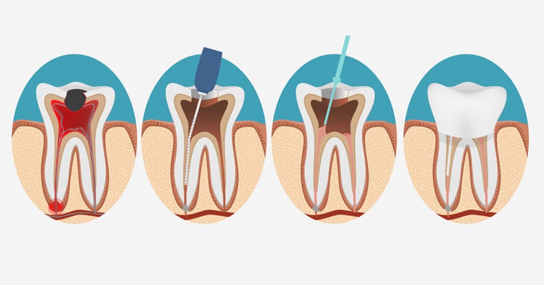
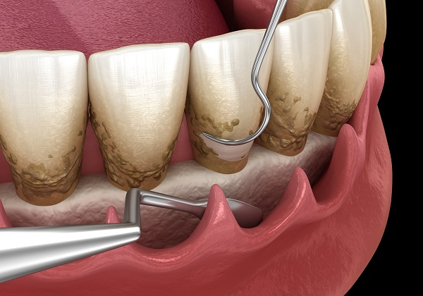
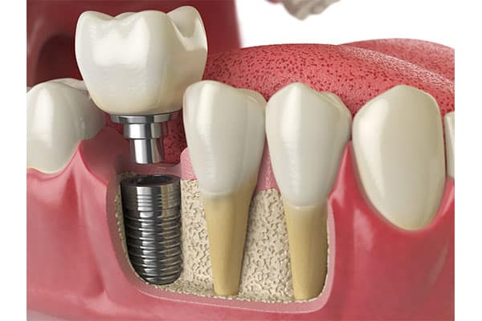
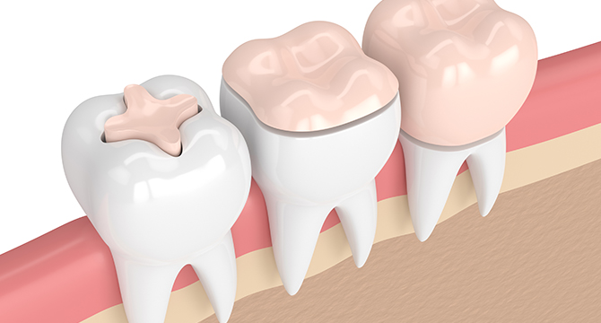
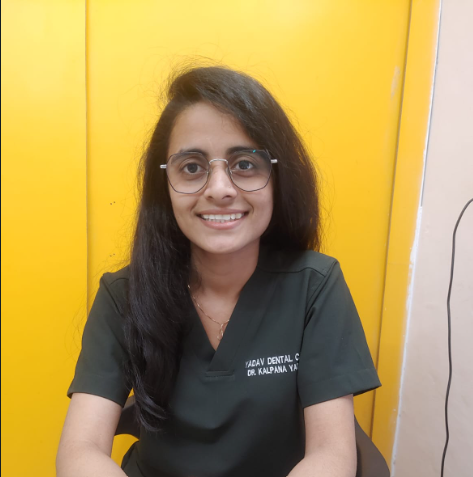
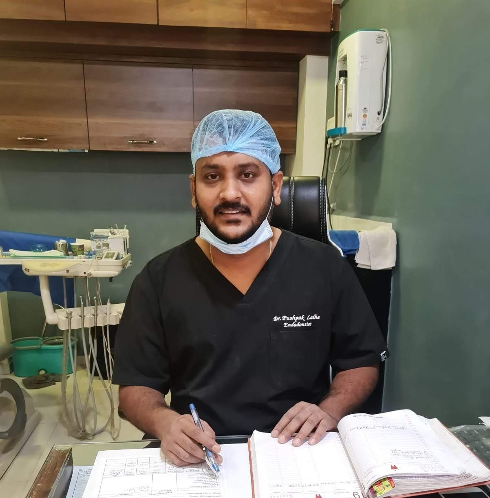

In an emergency? Need help now?
If you are experiencing a dental emergency and need immediate help, it is important to call your dentist's
office and explain the situation.
Remember, seeking prompt treatment for a dental emergency can help prevent further damage and minimize the
risk of long-term complications.
About Us
Dental services are a range of procedures and treatments provided by dental professionals, such as dentists, dental hygienists, and dental assistants, to maintain and improve oral health. Some common dental services

A dental clinic is a healthcare facility that provides dental care services to patients.
Dental clinics are staffed by dentists, dental hygienists, and other dental professionals who work together to diagnose and treat a wide range of oral health conditions.
- Fillings: Dental clinics can place fillings to repair small to medium-sized cavities caused by tooth decay.
- Dental implants: Dental clinics can place dental implants to replace missing teeth.
- Extractions: Dental clinics can extract damaged or diseased teeth that cannot be saved.
- Crowns and bridges: Dental clinics can place crowns and bridges to restore damaged or missing teeth.
Dental clinics typically use advanced technology and equipment to provide high-quality care to patients, and they may also offer additional services, such as cosmetic dentistry, to enhance the appearance of their patients' smiles.
Doctors Dentists are highly trained medical professionals dedicated to oral health and hygiene.
Find out more »Departments The dental department provides comprehensive oral care for patients of all ages.
Find out more »Research Lab Dental research labs are at the forefront of innovation, developing new technologies and treatments for oral health.
Find out more »Awards Recognized for excellence in dental care and outstanding patient satisfaction.
Find out more »Services
Dental services are a range of procedures and treatments provided by dental professionals, such as dentists, dental hygienists, and dental assistants, to maintain and improve oral health. Some common dental services
Endodontics
This branch of dentistry focuses on the treatment of the inner parts of teeth, such as the root canal.
Prosthodontics
This branch of dentistry deals with the replacement of missing teeth with artificial ones, such as dentures and bridges.
Oral surgery
This includes procedures such as tooth extractions, wisdom teeth removal, and dental implants.
Preventive care
This includes routine checkups, cleanings, fluoride treatments, and X-rays to prevent oral health problems before they develop.
Restorative care
This includes procedures to repair damaged teeth, such as fillings, crowns, and bridges.
Make an Appointment
Booking an appointment is quick and easy — just send us a message on WhatsApp and we'll take care of the rest. Share your details and preferred time, and our team will confirm your appointment.
Click the Button
Tap the WhatsApp button below to start a conversation with our team.
Share Your Details
Tell us your name, preferred date & time, and the service you need.
Get Confirmed
Our team will confirm your appointment and send you a reminder.
Departments
The services offered by a dental department may include routine cleanings and check-ups, fillings and
extractions, root canals, orthodontic treatments, and more.
The goal of a dental department is to provide high-quality, comprehensive dental care to help patients
maintain good oral health and prevent future dental problems.
Preventive care
Preventive dental care is a type of dental care that focuses on maintaining good oral health and preventing the onset of dental problems.

The goal of preventive dental care is to keep individuals free from oral health issues, such as
cavities, gum disease, and other problems, by identifying and managing dental health risks before they
lead to more serious issues.
Preventive dental care typically includes routine dental check-ups and cleanings, as well as
treatments to address potential oral health problems, such as fluoride treatments, sealants, and
X-rays.
By receiving regular preventive dental care, individuals can help maintain good oral health,
prevent the onset of dental problems, and enjoy a healthy, confident smile.
Some common examples of preventive dental care include:
1. Regular dental exams and cleanings
2. Fluoride treatments
3. Dental X-rays
4. Dental sealants
5. Instruction on proper brushing and flossing techniques
6. Nutrition counseling
7. Tobacco cessation counseling
Endodontics
Endodontics is a specialty of dentistry that focuses on the diagnosis, treatment, and prevention of diseases of the dental pulp and the surrounding tissues of the tooth.

An endodontist is a dentist who has completed advanced training in this field and specializes in
providing endodontic treatments.
Some common endodontic procedures include root canal therapy, apicoectomy, and retreatment of
previous root canals. Endodontists use advanced technology and techniques to diagnose and treat issues
related to the dental pulp, such as infections, abscesses, and injuries, in order to save damaged
teeth and prevent the need for extraction.
Endodontists work closely with other dental professionals, such as general dentists and
specialists in other areas of dentistry, to provide comprehensive and coordinated dental care to their
patients.
They play an important role in helping individuals maintain good oral health and preventing the
onset of serious dental problems.
Periodontics
Periodontics is a branch of dentistry that focuses on the health of the gums and other supporting structures of the teeth, such as the bones and ligaments.

Periodontists are specialized dentists who treat conditions and diseases of the gums and other
supporting structures of the teeth.
Some common procedures performed by periodontists include scaling and root planing to remove
plaque and tartar from the teeth and gums, periodontal surgery to treat gum disease, placement of
dental implants to replace missing teeth, and gum grafting to restore damaged or receded gums.
If you have gum disease, bleeding gums, loose teeth, or other issues with your gums, you may be
referred to a periodontist by your general dentist for a consultation. The periodontist will evaluate
your condition and develop a treatment plan to help restore your gum health.
It's important to maintain good gum health, as gum disease has been linked to other serious
health problems, such as heart disease, stroke, and diabetes. By visiting a periodontist regularly,
you can help ensure that your gums stay healthy and strong, and reduce your risk of developing more
serious health problems.
Prosthodontics
Prosthodontics is a specialty within dentistry that focuses on the replacement of missing teeth and the restoration of damaged or misshapen teeth.

Prosthodontists are specialized dentists who have received advanced training in the design,
manufacture, and placement of dental prostheses, such as dentures, bridges, crowns, and implants.
If you have missing or damaged teeth, or if you are unhappy with the appearance of your smile,
you may benefit from a consultation with a prosthodontist. The prosthodontist will evaluate your
condition and develop a treatment plan to help restore your dental health and improve your smile.
Prosthodontic procedures can help improve the appearance, function, and health of your teeth and gums.
Some common procedures performed by prosthodontists include:
1. Denture placement: For patients who have lost all or most of their natural teeth, dentures can
provide a lifelike replacement that can help restore the ability to chew, speak, and smile with
confidence.
2. Crown placement: Crowns are tooth-shaped caps that are placed over damaged or misshapen teeth
to protect them from further damage and improve their appearance.
3. Bridge placement: Bridges are dental prostheses that are used to replace missing teeth. They
are anchored in place using the remaining natural teeth or dental implants.
4. Implant placement: Dental implants are artificial tooth roots that are placed into the jawbone
to support replacement teeth. They can provide a stable, long-lasting solution for missing teeth.
Restorative care
Restorative dentistry is a branch of dentistry that focuses on repairing and restoring damaged, decayed, or missing teeth.

The goal of restorative dentistry is to bring the teeth back to their normal function and
appearance, improving oral health and enhancing the patient's overall quality of life.
If you have damaged, decayed, or missing teeth, you may benefit from restorative dentistry
procedures.
Some common restorative dental procedures include:
1. Fillings: Fillings are used to repair small to medium-sized cavities caused by tooth decay.
They can be made of various materials, including amalgam (silver), composite (tooth-colored), gold,
and porcelain.
2. Crowns: Crowns, also known as caps, are dental prostheses that fit over damaged or decayed
teeth, protecting them from further damage and restoring their appearance.
3. Bridges: Bridges are dental prostheses used to replace missing teeth. They are anchored in
place using the remaining natural teeth or dental implants.
4. Dental Implants: Dental implants are artificial tooth roots that are placed into the jawbone
to support replacement teeth. They can provide a stable, long-lasting solution for missing teeth.
5. Dentures: Dentures are removable dental prostheses that replace missing teeth. They can be
used to replace all of the teeth or just a few missing teeth.
Doctors
A dentist, also known as a dental practitioner, is a healthcare professional who specializes in the diagnosis, prevention, and treatment of oral diseases and conditions. Dentists play a critical role in maintaining the oral health of patients, and they can provide a wide range of services.

Dr. Kalpana Yadav
Dental Surgeon
Dr. Pushpak Ladhe
EndodontistGallery
We're building a gallery to showcase our work and promote dental health. Would you be comfortable with us taking photographs or videos during your appointment to feature in our gallery? Your privacy will be respected.
{kind=link}
{kind=link}
{kind=link}
{kind=link}
{kind=link}
{kind=link}
{kind=link}